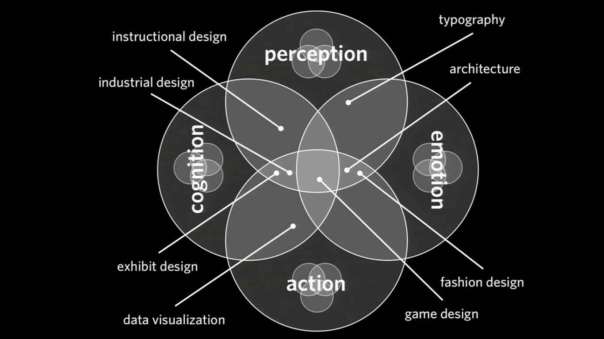

UX no es UI, ¿qué es entonces?
La experiencia de un usuario con un producto influye en la satisfacción de su uso. Una buena documentación o una buena estrategia de marketing provocan confianza y atracción hacía un producto y no hacía otro.
Que las marcas estén entrando en las redes sociales no es casualidad, ni mucho menos una moda. Es un soporte indirecto que hace que sintamos a la empresa de una manera cercana. Informa, pero a la vez responde a través de las personas o equipos que manejan los perfiles sociales.
UX no es una montaña de arena, UX es un edificio de "legos" donde cada pieza tiene un por qué y está puesta en su sitio a conciencia.
¿Qué es UX?
"Inventé el término porque pensé que el diseño de interfaces humanas y la usabilidad abarcaban demasiado poco: yo quería cubrir todos los aspectos de la experiencia de las personas con un sistema, incluido el diseño industrial, gráfico, de interfaces, la interacción física y la manual"
Don Norman, 1998 email.
Es mucho más que el diseño de la interfaz final que utilizará con el usuario. Podríamos decir, que la experiencia de usuario es el halo que rodea a una marca. El diseño UX abarca otros aspectos en los que el diseño de Interfaces no se centra, como usabilidad, entrevistas, recopilación de información sobre el producto, estudio de la interacción con el usuario, presentación, diseño de la imagen pública de la marca (“Persona”)...
Todo combinado y orientado a la visión que tendrá el usuario sobre la marca y no solo sobre el producto, provoca una experiencia que les hará recordar que han utilizado tu producto, y que por algo, le ha gustado más que los demás. Como dijo Sigmund Freud “no hay memoria sin contexto emocional”. Y es que, actualmente está demostrado que las emociones afectan a nuestra memoria condicionándola.
Por ello, el cuidadoso diseño de las experiencias de los usuarios es una poderosa arma que podemos utilizar a la hora de ofrecer un producto o un servicio, y en gran medida ayudará al éxito del proyecto, o al desastre si se realiza de manera incorrecta.
¿En qué se diferencia UX de UI?
"Aunque UX emerja de disciplinas de diseño, no es una disciplina de diseño"
Peter Merholz, UX Week 2012
Podemos hacer una símil para ver la diferencia:
Imaginemos una caja de herramientas. Tenemos un martillo para poner clavos, un destornillador para los tornillos y un alicate para colocar piezas. Todos los pequeños elementos que podemos utilizar como clavos y tornillos, son todas las partes que condicionan una marca, como es la personalidad, su estrategia de marketing, su soporte al usuario, los elementos de una interfaz… Las herramientas son los distintos elementos que ayudan a conseguir que esto funcione bien, como el diseño de Interfaces de usuario, la presentación de los datos en una conferencia, los trabajadores cualificados que dan soporte…
UX es la propia caja, es la coordinación y el estudio que hay detrás para saber como mover, como colocar y como mantener cada herramienta para que siempre esté ahí, cumpla su función y sea accesible al usuario, ya sea de manera consciente (como un soporte) o inconsciente (como un buen diseño UI que ayuda a manejar mejor la aplicación).
En la siguiente imagen podemos ver los aspectos que afectan de la experiencia de un usuario:

Imagen de Jesse James Garret
¡¿Necesito saber todo?!. La respuesta es no. Como dije antes, UX es coordinación. No necesitamos conocer todas las piezas de un puzzle para montarlo, solo la idea del color, la forma y la manera de unirlas correctamente.
"La experiencia de usuario surge de la suma de todas las interacciones con el producto o servicio de una organización"
Peter Merholz, UX Week 2012
UX es una disciplina. Engloba muchos aspectos con el único objetivo de mejorar la experiencia del usuario dentro y fuera de nuestros productos. Mi producto o servicio generalmente es una aplicación, una web o ambas juntas. Por ello centraré la temática del sitio a diseño de experiencias de usuario orientado a estas.
Quedan sentadas las bases, aunque no creais que este artículo está concluido. Aún queda mucho por aprender y seguir escribiendo. Y es que esto es lo que me motiva de UX, que cada día crece y cada detalle te aporta otra pieza de lego a tu pequeño edificio.
Referencias
Si os ha gustado el artículo, no olvidéis pasaros por los siguientes enlaces ;)
- Presentación de Peter Merholz en la UX Week 2012
- UX is not UI (Hello Erik)
- Presentaciones de Dan Saffer: "O Danny Boy | Interaction designer and author Dan Saffer"